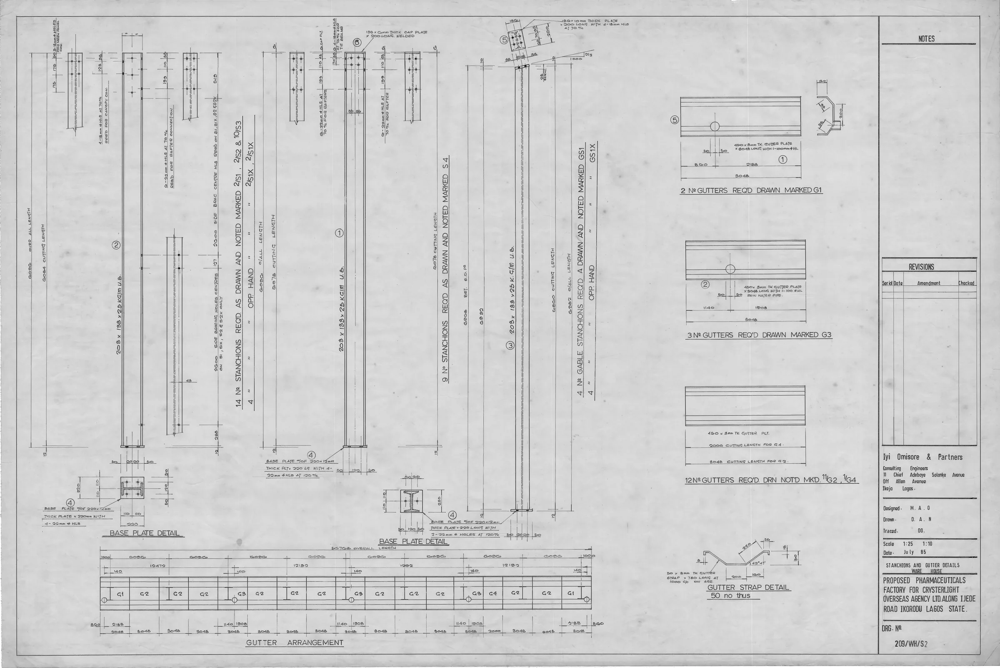

This guide offers professional buyers insights on sourcing Sculptra, covering key considerations for spas, clinics, and resellers.
In the competitive landscape of aesthetic treatments, sourcing the right products is crucial for spas, clinics, and resellers. Sculptra, a popular biostimulator, offers significant opportunities for enhancing client satisfaction and business growth. However, navigating the procurement process can be daunting, especially for those new to the market.
This guide aims to simplify the sourcing of Sculptra, providing practical insights for professional buyers. Understanding the nuances of this product category will empower you to make informed decisions that align with your business goals.
Key Takeaways
- Identify reputable Sculptra distributors to ensure product quality and reliability.
- Understand the importance of minimum order quantities (MOQ) for effective inventory management.
- Evaluate packaging and batch visibility to maintain product integrity.
- Communicate clearly with suppliers about shipping requirements and timelines.
- Plan for reorders by tracking sales trends and product demand.
What this guide covers
- Understanding Sculptra and its applications
- Identifying relevant buyer scenarios
- Comparison criteria for sourcing
- Checklist before requesting quotes
- Logistics considerations for shipping and documentation
- MOQ and reorder planning strategies
- Frequently asked questions
What buyers should understand first

Sculptra is a biostimulator that promotes collagen production, making it a sought-after option for aesthetic treatments. It is typically used to restore facial volume and improve skin texture over time. For clinics, spas, and resellers, understanding the product's characteristics, benefits, and market demand is essential for successful procurement.
As a professional buyer, you should be aware that Sculptra is available in various packaging options, which can influence your purchasing decisions. Familiarizing yourself with the product specifications will help you align your inventory with client needs and treatment offerings. Additionally, understanding the regulatory environment surrounding Sculptra is vital, as it can affect your ability to source and sell the product legally.
Which buyers is this most relevant for?
This guide is particularly relevant for:
- Spas: Looking to expand their service offerings with effective aesthetic treatments, enhancing their competitive edge in the market.
- Clinics: Seeking reliable sources for high-demand products to enhance patient satisfaction and retention.
- Resellers: Aiming to stock quality products that appeal to their clientele, ensuring they meet market demand.
Each of these business types has unique order planning needs, from initial stock assessments to ongoing inventory management. Spas may need to evaluate seasonal trends, while clinics might focus on patient demographics. Resellers often need to consider the preferences of their customer base when planning orders. Understanding these scenarios will help you tailor your procurement strategy effectively.
How to compare options before ordering
When evaluating potential suppliers for Sculptra, consider the following criteria:
- Product Type: Ensure you are sourcing the correct formulation and concentration that aligns with your treatment offerings.
- Brand Reputation: Research the supplier’s history, customer feedback, and their standing in the industry to ensure reliability.
- Packaging: Assess whether the packaging meets your storage and usage requirements, as well as the preferences of your clients.
- Batch and Expiry Visibility: Confirm that suppliers provide clear information on batch numbers and expiration dates to maintain product integrity.
- Supplier Communication: Evaluate how responsive and informative the supplier is regarding your inquiries, as good communication can prevent misunderstandings.
- Destination Requirements: Understand any specific regulations or requirements for shipping to your location, including customs and import regulations.
Buyer checklist before requesting a quote


- Define your desired quantities and product variants based on your business needs.
- Confirm your budget and pricing expectations to ensure alignment with your financial goals.
- Gather necessary documentation for your business, including licenses if required for purchasing Sculptra.
- Prepare shipping details, including destination and preferred carrier, to facilitate smooth logistics.
- Outline any specific questions or concerns to address with the supplier to ensure clarity before placing an order.
Shipping, packing and documentation questions
Logistics is a critical aspect of procurement. Here are some common questions to consider:
- What are the shipping options available, and what are the associated costs for each option?
- How will the products be packed to ensure they arrive safely and in good condition?
- What documentation will be provided with the shipment, such as invoices and certificates of authenticity?
- Are there any customs regulations that need to be addressed for your location, and how can they affect delivery?
- What is the supplier's policy on handling damaged or lost shipments, and how quickly do they respond to such issues?
MOQ, quotation and reorder planning
Understanding minimum order quantities (MOQ) is essential for effective procurement. Different suppliers may have varying MOQs, which can impact your purchasing strategy. When preparing to request a quote, consider the following:
- Determine the quantities you need based on your sales forecasts and historical data.
- Identify any product variants you wish to order, such as different concentrations or packaging sizes.
- Provide detailed shipping information to ensure accurate quotations, including any specific delivery requirements.
- Contact SOLA to confirm current availability and request a wholesale quotation tailored to your needs.
FAQ
What is Sculptra?
Sculptra is a biostimulator that helps restore facial volume by promoting collagen production, making it a popular choice in aesthetic treatments.
How do I find a reliable Sculptra distributor?
Research potential distributors, check reviews, and evaluate their product offerings and customer service to ensure reliability.
What should I consider when planning my orders?
Consider your sales trends, client demand, and minimum order quantities when planning your orders to optimize inventory levels.
What documentation do I need for shipping Sculptra?
Ensure you have the necessary business licenses and any required customs documentation for your location to facilitate smooth shipping.
How can I get a quote for Sculptra products?
Contact potential suppliers with your order details and shipping information to receive a tailored quote that meets your needs.
Contact SOLA for wholesale quotation via WhatsApp.
Planning a wholesale request?
Send product names, quantities and destination for a tailored discussion.
Contact SOLA on WhatsApp →General educational content for professional buyers. Not medical, legal, regulatory or import advice.
Image sources: Ijede Rd Ikorodu Pharmaceuticals Factory For Crsterlight Overseas Agency Ltd Nigeria 1985 Designed by Michael Olutusen Onafowokan Stanchions Gutter Details Warehouse Drwg209-Wh-S2 029.jpg by Onafowokan Michael Olutusen (CC BY-SA 4.0, 3936x2632 px).